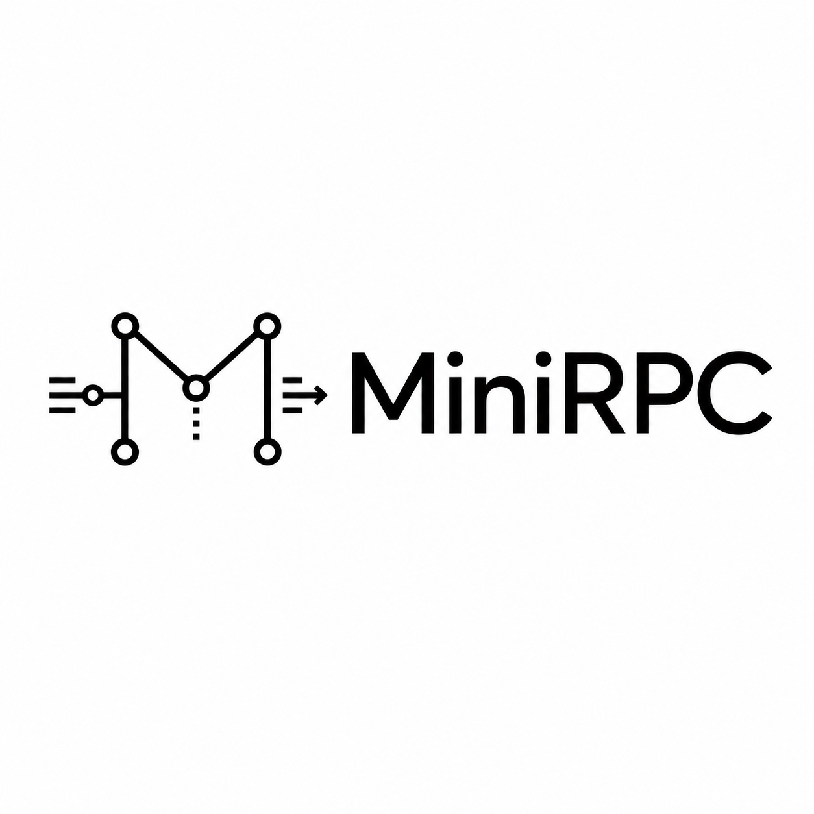

动态代理
通过 JDK Proxy 将接口方法调用转换为 RPC 请求，消费者像调用本地方法一样调用远程服务。

MiniRPCJava 21 / Netty / RPC / Observability
面向 Java 后端核心能力展示的 RPC 项目，覆盖动态代理、二进制协议、服务注册发现、负载均衡、连接复用、心跳、重试、熔断和 Prometheus 指标。
Feature Set
通过 JDK Proxy 将接口方法调用转换为 RPC 请求，消费者像调用本地方法一样调用远程服务。
客户端连接池复用 Channel，服务端通过 Netty pipeline 完成高吞吐收发与编解码。
业务方法执行默认交给 Java 21 虚拟线程，降低高并发阻塞调用下的线程成本。
内置本地注册表，抽象接口可扩展 Redis、Nacos、Zookeeper 等注册中心。
支持随机、轮询和一致性 Hash，适配普通调用和需要路由稳定性的场景。
提供超时、重试、熔断与 Prometheus 指标，输出请求量、失败率、重试数和 P95 延迟。
Protocol
MiniRPC 报文头固定 22 字节，包含魔数、版本号、序列化类型、消息类型、请求 ID 和消息体长度。Decoder 在 body 未完整到达时回退 reader index，避免半包误读。
Magic(4) | Version(1) | Serializer(1)
MessageType(1) | Reserved(1)
RequestId(8) | BodyLength(4)
Reserved(2) | Body(N)Quickstart
mvn test
mvn -q -DskipTests package
java -jar target/minirpc-1.0.0.jar示例服务监听 127.0.0.1:9000，指标暴露在 http://127.0.0.1:9100/metrics。